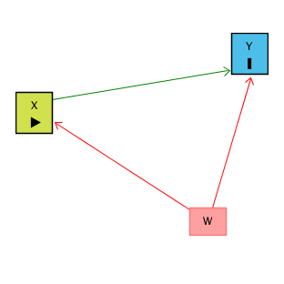
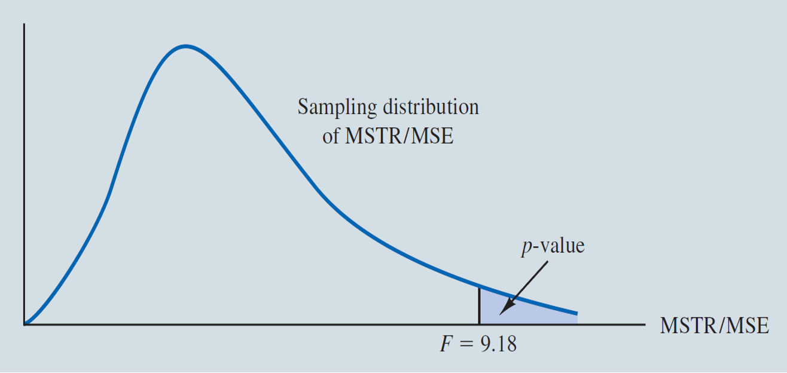

MGMT 30500: Business Statistics
Multiple Regression
Professor
Davi Moreira
Davi Moreira
August 01, 2024
Overview
- Multiple Regression Model
- Least Squares Method
- Multiple Coefficient of Determination
- Model Assumptions
- Testing for Significance: Overall and Individual
- Multicollinearity Issue
- Residual Analysis
- Prediction
- Categorical Independent Variables
Motivation
Motivation: Controlling for a Variable
- Puzzle: What is the effect of education on income?
- Y: Income
- X: Education
- Objective: X \(\rightarrow\) Y
- Challenge: X \(\leftarrow\) W \(\rightarrow\) Y
- W: IQ (Intelligence)
- Solution: Control for W
Motivation: Controlling for a Variable

Source: Causal Inference Animated Plots
Motivation: Controlling for a Variable

Source: Causal Inference Animated Plots
Omitted Variables (Confounders)
One of the most common errors in observational studies (besides selection bias and information bias — classification or measurement error);
It occurs when we suggest that the explanation for something is “confounded” with the effect of another variable;
For example, “the sun rose because the rooster crowed,” and not because of Earth’s rotation.
How to Address Omitted Variable Bias?
Be well-versed in the literature;
Select good control variables for your model;
That is, perform a multiple regression model.
Multiple Regression
Multiple Regression
Regression analysis involving two or more independent variables (x’s).
This subject area, called multiple regression analysis, enables us to consider more independent variables (factors) and thus obtain better estimates of the relationship than are possible with simple linear regression.
Multiple Regression Model
The equation that describes how the dependent variable \(y\) is related to the independent variables \(x_1, x_2, \ldots x_p\) and an error term \(\epsilon\) is:
\[ y = \beta_0 + \beta_1 x_1 + \beta_2 x_2 + \dots + \beta_p x_p + \epsilon \]
Where:
\(\beta_0, \beta_1, \beta_2, \dots, \beta_p\) are the unknown parameters.
\(\epsilon\) is a random variable called the error term with the same assumptions as in simple regression (Normality, zero mean, constant variance, independence).
\(p\) is the number of independent variables (dimension or complexity of the model).
Multiple Regression Equation
The equation that describes how the mean value of \(y\) is related to \(x_1, x_2, \ldots x_p\) is:
\[ E(y) = \beta_0 + \beta_1 x_1 + \beta_2 x_2 + \dots + \beta_p x_p \]
\(\beta_1, \ldots, \beta_p\) measure the marginal effects of the respective independent variables.
For example, \(\beta_1\) is the change in \(E(y)\) corresponding to a 1-unit increase in \(x_1\), when all other independent variables are held constant or when we control for all other independent variables.
Estimated Multiple Regression Equation
\[ \hat{y} = b_0 + b_1 x_1 + b_2 x_2 + \dots + b_p x_p \]
A simple random sample is used to compute sample slopes \(b_0, b_1, b_2, \dots, b_p\) that are used as the point estimators of the population slopes \(\beta_0, \beta_1, \beta_2, \dots, \beta_p\).
Hence, \(\hat{y}\) estimates \(E(Y)\).
Least Squares Method
Least Squares Method
Least Squares Criterion: Minimize the Sum of Squared Errors (SSE):
\[ \min \sum (y_i - \hat{y_i})^2 \]
Where \(y_i - \hat{y_i}\) is the \(i\)-th residual/error.
The formulas for the regression coefficients \(b_0, b_1, b_2, \dots, b_p\) involve the use of matrix algebra. We will rely on computer software packages to perform the calculations.
The emphasis will be on how to interpret the computer output rather than on how to make the multiple regression computations.
Estimation Process
Multiple Regression Model
Example: Butler Trucking Company
Managers at Butler Trucking Company want to develop better work schedules for their drivers. They believe that the total daily travel time would be closely related to the number of miles traveled in making the daily deliveries and also to the number of deliveries.
A simple random sample of 10 driving assignments was taken.
Multiple Regression Model
Example: Butler Trucking Company - Butler.xlsx
| Driving Assignment | Miles traveled \(x_1\) | Deliveries \(x_2\) | \(y\) = Travel Time (hours) |
|---|---|---|---|
| 1 | 100 | 4 | 9.3 |
| 2 | 50 | 3 | 4.8 |
| 3 | 100 | 4 | 8.9 |
| 4 | 100 | 2 | 6.5 |
| 5 | 50 | 2 | 4.2 |
| 6 | 80 | 2 | 6.2 |
| 7 | 75 | 3 | 7.4 |
| 8 | 65 | 4 | 6.0 |
| 9 | 90 | 3 | 7.6 |
| 10 | 90 | 2 | 6.1 |
Multiple Regression Model
Example: Butler Trucking Company
Suppose we believe that total daily travel time (\(y\)) is related to the miles traveled (\(x_1\)) and the number of deliveries made (\(x_2\)) by the following multiple linear regression model:
\[ y = \beta_0 + \beta_1 x_1 + \beta_2 x_2 + \epsilon \]
Where:
\(y\) = Total travel time
\(x_1\) = Miles traveled
\(x_2\) = Deliveries made
\(n = 10, p = 2\)
Summary Statistics
| Miles (\(x_1\)) | Deliveries (\(x_2\)) | Time (\(Y\)) | |
|---|---|---|---|
| Mean | 80 | 2.9 | 6.7 |
| Standard Error | 6.191 | 0.277 | 0.515 |
| Median | 85 | 3 | 6.35 |
| Mode | 100 | 2 | #N/A |
| Standard Deviation | 19.579 | 0.876 | 1.630 |
| Sample Variance | 383.333 | 0.767 | 2.656 |
| Kurtosis | -1.114 | -1.734 | -0.547 |
| Skewness | -0.583 | 0.223 | 0.196 |
| Range | 50 | 2 | 5.1 |
| Minimum | 50 | 2 | 4.2 |
| Maximum | 100 | 4 | 9.3 |
| Sum | 800 | 29 | 67 |
| Count | 10 | 10 | 10 |
Correlations
| Miles (\(x_1\)) | Deliveries (\(x_2\)) | Time (\(Y\)) | |
|---|---|---|---|
| Miles (\(x_1\)) | 1 | ||
| Deliveries (\(x_2\)) | 0.162 | 1 | |
| Time (\(Y\)) | 0.815 | 0.615 | 1 |
Regression Output
Example: Butler Trucking Company
Estimated Regression Equation
Example: Butler Trucking Company
Prediction equation:
\[ \hat{y} = -0.8687 + 0.0611x_1 + 0.9234x_2 \]
For observation #1 where \(x_1 = 100\), \(x_2 = 4\), and \(y = 9.3\):
\[ \hat{y} = -0.8687 + 0.0611(100) + 0.9234(4) = 8.9385 \]
Unexplained residual = \(y - \hat{y} = 9.3 - 8.9385 = 0.3615\)
Interpreting the Regression Coefficients
Each \(b_i\) (for \(x_i\)) represents an estimate of the change in the expected \(y\) corresponding to a 1-unit increase in \(x_i\), when all other independent variables are held constant or when we control for all other independent variables.
Interpreting the Regression Coefficients
Example: Butler Trucking Company
\(b_1 = +0.0611\) (for \(x_1\))
- +0.0611 is the estimated average change (increase) in the expected travel time corresponding to an increase of one mile in the distance traveled when the number of deliveries is held constant.
\(b_2 = +0.9234\) (for \(x_2\))
- +0.9234 is the estimated average change (increase) in the expected travel time corresponding to an increase of one delivery when the number of miles traveled is held constant.
Multiple Coefficient of Determination
Multiple Coefficient of Determination
Relationship Among SST, SSR, SSE
| SST | SSR | SSE | |
|---|---|---|---|
| Formula | \(\sum (y_i - \bar{y})^2\) | \(\sum (\hat{y}_i - \bar{y})^2\) | \(\sum (y_i - \hat{y}_i)^2\) |
| Degrees of Freedom | \(n-1\) | \(p\) | \(n-p-1\) |
\[ \sum (y_i - \bar{y})^2 = \sum (\hat{y_i} - \bar{y})^2 + \sum (y_i - \hat{y_i})^2 \]
Where:
SST = Total sum of squares (total variation of the response)
SSR = Sum of squares due to regression (explained by all predictors)
SSE = Sum of squares due to error (unexplained variation of residuals)
\(n\) = sample size.
\(p\) = number of predictors (independent variables).
The degrees of freedom for SSE reflect the number of observations left after accounting for the number of estimated parameters (\(n - (p + \text{one intercept})\).
Partition of SST
Multiple Coefficient of Determination
Example: Butler Trucking Company
ANOVA Table
| ANOVA | df | SS | MS | F | Significance F |
|---|---|---|---|---|---|
| Regression | 2 | 21.6006 | 10.8003 | 32.8784 | 0.0003 |
| Residual | 7 | 2.2994 | 0.3285 | ||
| Total | 9 | 23.9 |
Multiple Coefficient of Determination
Example: Butler Trucking Company
\[ R^2 = \frac{SSR}{SST} = 1 - \frac{SSE}{SST} \]
\[ R^2 = \frac{21.6006}{23.9} = 1 - \frac{2.2994}{23.9} = 90.38\% \]
\[ R^2 = 1 - \frac{SSE / (n - 1)}{SST / (n - 1)} = 1 - \frac{\text{Residual variance}}{\text{Response variance}} \]
Remarks on Multiple Coefficient of Determination
Adding independent variables, even ones that are not statistically significant, will reduce the prediction errors, thus the SSE will become smaller.
Because SST = SSR + SSE is fixed, SSR will become larger, SSE will become smaller, and hence, \(R^2 = SSR/SST\) will always increase.
But, adding independent variables, the model will become more complex (a larger \(p\)).
Adjusted Multiple Coefficient of Determination
The adjusted multiple coefficient of determination (\(R^2_a\)) takes into account the following factors:
The number of independent variables in the model (\(p\), dimension or complexity)
The \(R^2\) (Adequacy)
The sample size (\(n\), available information)
Adjusted Multiple Coefficient of Determination
Example: Butler Trucking Company
\[ R^2 = 1 - \frac{SSE}{SST} = 90.38\% \]
\[ R^2_a = 1 - \frac{\frac{SSE}{(n - p - 1)}}{\frac{SST}{(n - 1)}} = 1 - (1 - R^2) \cdot \frac{n - 1}{n - p - 1} \]
\[ R^2_a = 1 - \frac{2.2994 / (10 - 2 - 1)}{23.9 / (10 - 1)} = 1 - (1 - 0.9038) \cdot \frac{10 - 1}{10 - 2 - 1} = 87.63\% \]
Adjusted Multiple Coefficient of Determination
\[ R^2_a = 1 - \frac{\frac{SSE}{(n - p - 1)}}{\frac{SST}{(n - 1)}} = 1 - \frac{MSE}{\frac{SST}{(n - 1)}} = 1 - \frac{S^2}{\frac{SST}{(n - 1)}} \]
A smaller \(S^2\) gives a higher \(R^2_a\).
Bringing in a new independent variable will increase the \(R^2_a\) when and only when it can decrease the estimated error variance (\(S^2\) or MSE). Hence, \(R^2_a\) is a good criterion for model building or model selection.
(Recall: MSE or \(S^2\) estimates the error variance \(\sigma^2\).)
Testing for Significance
Testing for Significance
- In simple linear regression, the F and \(t\) Tests provide the same conclusion:
- They are equivalen\(t\) Tests: Squared t-value = F-value.
- They have the same p-value.
- In multiple regression, the F and \(t\) Tests have different purposes and are not equivalent.
Testing for Overall Significance: \(F\) Test
The \(F\) Test is used to determine whether a significant linear relationship exists between the dependent variable and the set of all the independent variables, by testing their population slopes (\(\beta_1, \dots, \beta_p\)) together as a group.
The \(F\) Test is referred to as the test for overall significance.
Testing for Overall Significance: \(F\) Test
Hypotheses
\[ H_0: \beta_1 = \beta_2 = \dots = \beta_p = 0 \quad (\text{No linear relationship}) \]
\[ H_a: \text{One or more of the slopes is not equal to zero} \]
Test Statistics
\[ F = \frac{MSR}{MSE} \]
Rejection Rule
Reject \(H_0\) if \(F \geq F_\alpha\) or \(p \leq \alpha\).
where \(F_\alpha\) is based on an \(F\) distribution with \(p\) d.f. (numerator) and \(n - p - 1\) d.f. (denominator).
Testing for Overall Significance: \(F\) Test
Example: Butler Trucking Company
Hypotheses:
\[ H_0: \beta_1 = \beta_2 = 0 \]
\[ H_a: \text{One or both slopes are not equal to zero} \]
Rejection Rule
For \(\alpha = 0.01\) and degrees of freedom = 2 and 7, \(F_{\alpha} = 9.55\).
Reject \(H_0\) if \(F \geq 9.55\) or \(p \leq .01\).
Testing for Overall Significance: \(F\) Test
Test Statistics
\[ F = \frac{MSR}{MSE} = \frac{10.8003}{0.3285} = 32.8784 \]
Conclusion:
We reject \(H_0\) because \(F = 32.8784 > 9.55\).
We have significant statistical evidence to conclude that at least one of the independent variables is useful in explaining the variation in the total travel time, or for predicting the total travel time. The significance level is 1%.
Testing for Overall Significance: \(F\) Test
ANOVA Output
| Source | df | SS | MS | F | Significance F |
|---|---|---|---|---|---|
| Regression | 2 | 21.6006 | 10.8003 | 32.8784 | 0.0003 |
| Residual | 7 | 2.2994 | 0.3285 | ||
| Total | 9 | 23.9 |
\[ p = 1 - F.DIST(32.8784, 2, 7, TRUE) \approx 0.0003 \]
Testing for Individual Significance: \(t\) Test
If the \(F\) test shows an overall significance, a separate \(t\) test is conducted for each of the independent variables in the model.
The \(t\) test is used to determine whether each of the individual independent variables is significant in the presence of all other independent variables in the model.
- I\(t\) Tests the additional contribution in reducing the variation of the unexplained error (or in increasing the explained variation).
We refer to each of these \(t\) Tests as a test for individual significance.
Testing for Individual Significance: \(t\) Test
Hypotheses
\[ H_0: \beta_i = 0 \quad (x_i \text{ is not significant in the presence of all other } x's) \]
\[ H_a: \beta_i \neq 0 \]
Test Statistic
\[ t = \frac{b_i - 0}{s_{b_i}} \quad (s_{b_i} \text{ is the standard error of } b_i) \]
Rejection Rule
Reject \(H_0\) if \(t \leq -t_{\alpha / 2}\) or \(t \geq t_{\alpha / 2}\) or if \(p\)-value \(\leq \alpha\).
where \(t_{\alpha/2}\) is based on a \(t\)-distribution with \(n - p - 1\) degrees of freedom.
Testing for Individual Significance: \(t\) Test
Example: Butler Trucking Company
- \(H_0: \beta_i = 0\)
- \(H_a: \beta_i \neq 0 \quad \text{(Two-tailed)}\)
For \(\alpha = 0.01\) and \(df = 7\):
\[ t_{0.005} = 3.499 \]
Reject \(H_0\) if \(p\)-value \(\leq .01\), or if \(t \leq -3.499\) or \(t \geq 3.499\).
Testing for Individual Significance: \(t\) Test
Test Statistics
\[ t = \frac{b_1 - 0}{s_{b_1}} = \frac{0.0611 - 0}{0.0099} = 6.1717, \quad \text{for } x_1 \]
\[ t = \frac{b_2 - 0}{s_{b_2}} = \frac{0.9234 - 0}{0.2211} = 4.1764, \quad \text{for } x_2 \]
Conclusion
Reject each of \(H_0: \beta_1 = 0\) and \(H_0: \beta_2 = 0\). Each independent variable is statistically significant in the presence of the other.
Testing for Individual Significance: \(t\) Test
Example: Butler Trucking Company
Regression Table
Multicollinearity
Multicollinearity
The term multicollinearity refers to the correlation among the independent variables.
It is important to compute pairwise correlations in a multiple regression analysis.
When independent variables are highly correlated (e.g., \(|r| > 0.7\)), it is difficult to determine the separate/marginal effect of each independent variable on the dependent variable.
Every attempt should be made to avoid including independent variables that are highly correlated.
If the estimated regression equation is to be used only for predictive purposes, multicollinearity is usually not a serious problem
Multicollinearity
The coefficients do not measure marginal effects of the predictors (rather combined effects may be measured).
Coefficient estimates (b’s) are unstable (having “inflated” standard errors — also see Variance Inflation Factor, VIF).
- Nonsignificant test results for important predictor variables.
- Estimated regression coefficients with an algebraic sign that is the opposite of what is expected from theoretical considerations or prior experience.
- Large changes in the estimated regression coefficients (slopes) when a predictor variable is added or deleted.
- Wide confidence intervals for the regression coefficients representing important predictor variables.
Prediction
Prediction
The procedures for estimating the mean value of \(y\) and predicting an individual value of \(y\) in multiple regression are similar to those in simple regression. The interpretations of CI (Confidence Interval) and PI (Prediction Interval) are also similar.
We substitute the given values of \(x_1, x_2, ..., x_p\) into the estimated regression equation and use the corresponding value of \(\hat{y}\) as the point estimate.
The formulas required to develop interval estimates, CI and PI, are beyond the scope of the course and our textbook. Software packages for multiple regression will often provide these interval estimates.
Categorical Independent Variables
Categorical Independent Variables
In many situations, we need to work with categorical independent variables such as gender (an independent variable with 2 categories: Male, Female), method of payment (an independent variable with 3 categories: Cash, Check, Credit card), etc.
Need to code categorical independent variables. For example, if \(x_2\) is a gender variable, let \(x_2 = 1\) for males and \(x_2 = 0\) for females.
In this case, \(x_2\) is called a dummy or indicator variable, and the category with a 0 (i.e., female) is called the reference category or level.
Categorical Independent Variables
- Gender: F, M
- Job Type: Lawyer, Salesperson, Educator, Government (for salary)
- Tool Type: A, B, C (for yields)
- Region: NE, NW, SE, SW (for sales)
- Season (for sales)
- Training Method: Online, Hybrid, In-person (for learning outcome)
- Position: Manager, AVP, Senior VP, Chair (for retirement age)
- Advertising Media: Newspaper, Magazine, Spot TV (for sales)
- Smoker: Yes, No (for health risk)
- Method of Payment: Cash, Check, Credit Card (for credit rating or loan approvals)
Categorical Independent Variables
Example: Johnson Filtration, Inc.
Managers of Johnson Filtration, Inc. want to predict the repair time necessary for processing its maintenance requests. Repair time is believed to be related to two factors, the number of months since last service and the type of repair problem (mechanical or electrical). Data for a sample of 10 service calls are reported in the table (next slide).
Categorical Independent Variables
Example: Johnson Filtration, Inc
| Service Call | Months since last service | Type of repair | Repair time (hours) |
|---|---|---|---|
| 1 | 2 | 1 | 2.9 |
| 2 | 6 | 0 | 3.0 |
| 3 | 8 | 1 | 4.8 |
| 4 | 3 | 0 | 1.8 |
| 5 | 2 | 1 | 2.9 |
| 6 | 7 | 1 | 4.9 |
| 7 | 9 | 0 | 4.2 |
| 8 | 8 | 0 | 4.8 |
| 9 | 4 | 1 | 4.4 |
| 10 | 6 | 1 | 4.5 |
0 = Mechanical (reference)
1 = Electrical
Categorical Independent Variables
Example: Johnson Filtration, Inc.
Regression model:
\[ y = \beta_0 + \beta_1 x_1 + \beta_2 x_2 + \epsilon \]
Where:
\(y\) = Repair time in hours
\(x_1\) = Number of months since last maintenance service
\(x_2\) = 0 if type of repair is mechanical, 1 if the type of repair is electrical ( \(x_2\) is a dummy variable)
Categorical Independent Variables
Example: Johnson Filtration, Inc.
ANOVA Output:
| df | SS | MS | F | Significance F |
|---|---|---|---|---|
| Regression | 2 | 9.0009 | 4.5005 | 21.357 |
| Residual | 7 | 1.4751 | 0.2107 | |
| Total | 9 | 10.476 |
\[ R^2 = \frac{9.0009}{10.476} = 89.52\% \]
\[ R_a^2 = 1 - (1 - 0.8952) \cdot \frac{10 - 1}{10 - 2 - 1} = 81.90\% \]
This indicates the estimated regression equation does a good job of explaining the variability in repair times.
Categorical Independent Variables
Interpretation of regression coefficient \(\beta_2\) of dummy variable \(x_2\):
\[ E(y) = \beta_0 + \beta_1 x_1 + \beta_2 x_2 \]
For mechanical (reference):
\[
E(y) = \beta_0 + \beta_1 x_1 + \beta_2 \cdot 0 = \beta_0 + \beta_1 x_1
\]
For electrical:
\[
E(y) = \beta_0 + \beta_1 x_1 + \beta_2 \cdot 1 = \beta_0 + \beta_1 x_1 + \beta_2
\]
\(\beta_2\) is the difference in the expected repair time between two types of repair if the numbers of months since last maintenance service (\(x_1\)) are the same.
Categorical Independent Variables
Example: Johnson Filtration, Inc.
| Coefficients | Standard Error | t Stat | P-value | |
|---|---|---|---|---|
| Intercept | 0.9305 | 0.4670 | 1.9926 | 0.0866 |
| Months | 0.3876 | 0.0626 | 6.1954 | 0.0004 |
| Type | 1.2627 | 0.3141 | 4.0197 | 0.0051 |
Months since last service is significant at 1% significance level (in the presence of the second variable, or if we control for Type of problem).
Type of problem is also significant at 1% significance level if we control for the Months, and an electrical problem is predicted or estimated to take a longer time (by 1.1627) to repair than a mechanical one (the reference category).
More Complex Categorical Variables
If a categorical variable has \(k\) levels, only \(k - 1\) dummy variables are required, with each dummy variable being coded as 0 or 1.
Example: Quarterly sales (dependent variable) vs. Sales regions
| Region | DA | DB | DC |
|---|---|---|---|
| A | 1 | 0 | 0 |
| B | 0 | 1 | 0 |
| C | 0 | 0 | 1 |
Use only two (any two) dummy variables; i.e., two dummy variables are sufficient to differentiate the three regions.
Model Assumptions
Assumptions About the Error Term \(\epsilon\)
The error term \(\epsilon\) is a random variable reflecting the deviation between the observed \(y\) value and the expected value of \(y\) given by \(\beta_0 + \beta_1 x_1 + \beta_2 x_2 + \dots + \beta_p x_p\).
\(\epsilon\) is a normally distributed random variable with mean of 0.
The variance of \(\epsilon\), denoted by \(\sigma^2\), is the same for all values of the independent variables.
The values of \(\epsilon\) are independent.
Residual Analysis
Residual Analysis
For simple linear regression, the residual plot against \(\hat{y}\) and the residual plot against \(x\) provide the same information.
In multiple regression analysis, it is preferable to use the residual plot against \(\hat{y}\) to determine if the model assumptions are satisfied.
Standardized Residuals
Standardized residuals are frequently used in residual plots for purposes of:
- Identifying outliers (typically, standardized residuals \(< -2\) or \(> +2\))
- Providing insight about the assumption that the error term \(\epsilon\) has a normal distribution, using the Empirical Rule.
The computation of standardized residuals in multiple regression analysis is too complex to be done by hand.
- Excel’s Regression tool can be used.
Normality of residuals can be checked by the normal probability plot.
Standardized Residuals
Example: Butler Trucking Company: Residual output
Standardized Residual Plot Against \(\hat{y}\)
Example: Butler Trucking Company
Adding or Removing Independent Variables?
Adding or Removing Independent Variables?
If adding a predictor to a model can lower the estimated error variance \(S^2\), then adding it will increase Adjusted \(R^2\).
Definition: A predictor is said to be an ineffective predictor if its \(|T\text{-value}|\)
- \(\frac{|b-0|}{se(b)} < 1\) (coefficient estimate \(b\) is within one standard deviation from 0), or its two-sided p-value \(> 0.32\).
- Adding an ineffective predictor will decrease Adjusted \(R^2\).
- Removing an ineffective predictor will increase Adjusted \(R^2\).
- We will be penalized for including ineffective predictors.
Application of Dummy Variables
Chemitech Experiment
Chemitech developed a new filtration system for municipal water supplies.
There are different methods that can be used to assemble the system.
Chemitech has narrowed down to three methods: A, B, and C and wants to determine which assembly method can produce the greatest number of filtration systems per week.
Chemitech Experiment (cont’d)
For the purpose, it selected 15 workers and then randomly assigned each of the three treatments to 5 of the workers.
Response (Y): Number of units produced per week
Factor: Assembly method
Treatments: A, B, and C
Experimental units: Employees
Chemitech Experiment (cont’d)
Hypotheses:
\(H_0: \mu_A = \mu_B = \mu_C\)
\(H_a:\) Not all the means are equal
where:
\(\mu_A = E(Y)\) using method A
\(\mu_B = E(Y)\) using method B
\(\mu_C = E(Y)\) using method C
Chemitech Experiment: Data (cont’d)
| Observation | A | B | C |
|---|---|---|---|
| 1 | 58 | 58 | 48 |
| 2 | 64 | 69 | 57 |
| 3 | 55 | 71 | 59 |
| 4 | 66 | 64 | 47 |
| 5 | 67 | 68 | 49 |
| Sample mean \(\bar{y}_j\) | 62 | 66 | 52 |
| Sample variance \(s_j^2\) | 27.5 | 26.5 | 31.0 |
Chemitech Experiment (cont’d)
One-way ANOVA by Regression with dummy variables:
Consider the Assembly Method (Factor) as the independent variable with three categorical values (A, B, C).
Use dummy variables to represent or differentiate the three categorical values.
Include only (any) two dummy variables for three categories.
Use an \(F\)-Test to test the overall significance of the dummy variables.
Define Dummy Variables
| Production | Method | DA | DB | DC |
|---|---|---|---|---|
| 58 | A | 1 | 0 | 0 |
| 64 | A | 1 | 0 | 0 |
| 55 | A | 1 | 0 | 0 |
| 66 | A | 1 | 0 | 0 |
| 67 | A | 1 | 0 | 0 |
| 58 | B | 0 | 1 | 0 |
| 69 | B | 0 | 1 | 0 |
| 71 | B | 0 | 1 | 0 |
| 64 | B | 0 | 1 | 0 |
| 68 | B | 0 | 1 | 0 |
| 48 | C | 0 | 0 | 1 |
| 57 | C | 0 | 0 | 1 |
| 59 | C | 0 | 0 | 1 |
| 47 | C | 0 | 0 | 1 |
| 49 | C | 0 | 0 | 1 |
- DA represents Method A
- DB represents Method B
- DC represents Method C
Model and Interpretation
Regression Model (assume category C is the reference category):
\[ Y = \beta_0 + \beta_1 \cdot (DA) + \beta_2 \cdot (DB) + 0 \cdot (DC) + \epsilon \]
or
\[ E(Y) = \beta_0 + \beta_1 \cdot (DA) + \beta_2 \cdot (DB) + 0 \cdot (DC) \]
\(\beta_1\): slope of DA - the difference in \(E(Y)\) between the category that DA represents and the reference category.
\(\beta_2\): slope of DB - the difference in \(E(Y)\) between the category that DB represents and the reference category.
Model and Interpretation (cont’d)
Regression Model (Use Method C as the reference method):
\[ E(Y) = \beta_0 + \beta_1 \cdot (DA) + \beta_2 \cdot (DB) + 0 \cdot (DC) \]
\(\mu_C = \beta_0\) for Method C
\(\mu_A = \beta_0 + \beta_1\) for Method A
\(\mu_B = \beta_0 + \beta_2\) for Method B
Hypotheses
Test of Overall Significance (\(F\) test):
\(H_0: \beta_1 = \beta_2 = 0\) (i.e., \(\mu_A = \mu_B = \mu_C\), and Method is insignificant)
Test of individual significance (\(t\) test):
\(H_0: \beta_1 = 0\) (i.e., \(\mu_A - \mu_C = 0\))
\(H_0: \beta_2 = 0\) (i.e., \(\mu_B - \mu_C = 0\))
Excel Output
Reject \(H_0\) at \(\alpha\) = 5%.
Overall, the assembly method is a significant factor.
Details of the \(F\)-Test
Test Statistic:
\(F = MSTR/MSE = 260/28.3333 = 9.1765\)
Decision Rule: Critical-value approach
Reject \(H_0\) if \(F \geq 3.8853\)
where \(3.8853 = F_{0.05} = F.INV(0.95, 2, 12)\) is the 5% upper critical value.
\(p\)-value

Where,
\(p\)-value = 1 – F.DIST(9.1765, 2, 12, TRUE) \(\approx 0.0038\)
- There is sufficient statistical evidence to conclude that at least two mean numbers of units produced are not equal and hence the Assembly Method is significant. The significance level is 5%.
Comparisons
| Coefficients | SE | t Stat | |
|---|---|---|---|
| Intercept | 52 | 2.38048 | 21.8444 |
| DA | 10 | 3.3665 | 2.97044 |
| DB | 14 | 3.3665 | 4.15862 |
Method A is predicted to have a higher expected production quantity than Method C (by 10 units), and it is significantly higher at \(\alpha = 5\%\).
Method B is predicted to have a higher expected production quantity than Method C (by 14 units), and it is significantly higher at \(\alpha = 5\%\).
Method A is predicted to have a lower expected production quantity than Method B (by 4 units), but the significance level cannot be determined directly based on this particular ANOVA output.
Summary
Summary
Some key takeaways from this session:
Multiple regression analysis enables the inclusion of more independent variables, improving estimates over simple regression.
The multiple regression model describes how the dependent variable is related to multiple independent variables.
Least Squares Method is used to estimate the coefficients by minimizing the sum of squared errors.
Adjusted \(R^2\) accounts for the number of predictors, making it a more reliable criterion for model selection.
Multicollinearity can affect the stability of coefficient estimates and make it difficult to isolate the effects of individual predictors.
Dummy variables can be used to incorporate categorical variables in regression models.
The overall significance of the model is tested using the F-test, while individual predictors are tested using t-tests.
Thank you!
Business Statistics